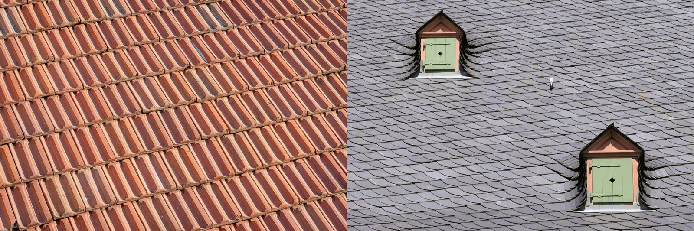

Tile Roof vs Asphalt Shingles
A century-lasting inert roof against the cheap familiar default. This matchup has the widest lifespan gap in roofing. When the extra cost of tile pays off, and when shingles make sense.

This matchup has the widest lifespan gap in roofing. A tile roof that can last a century against asphalt shingles that last 12 to 25 years. Tile costs more upfront and needs a stronger structure. Shingles are cheap and quick. In a harsh tropical climate the case for tile, or for skipping shingles entirely, gets stronger.
Bottom line
For a permanent tropical home, tile wins on every axis except upfront cost and weight. It lasts three to five times longer, runs cooler, and shrugs off humidity. Shingles make sense only for the tightest budgets or short-term ownership, and if you go that way, use architectural, algae-resistant, high-wind versions.Spec by spec
| Factor | Tile roof | Asphalt shingles |
|---|---|---|
| Upfront cost | 🟡 ~$60–180/m² | 🟢 ~$30–70/m² |
| Lifespan | 🟢 50–100 years | 🔴 12–25 years |
| Cost per year of life | 🟢 Very low | 🔴 High; frequent replacement |
| Heat / cooling | 🟢 Ventilated, cool | 🔴 Absorbs heat |
| Humidity / algae | 🟢 Inert, no algae | 🔴 Algae streaks |
| Weight | 🔴 Heavy; engineered structure | 🟢 Light |
| Hurricane / wind | 🟡 Excellent if fastened well | 🔴 Weakest common roof |
| Look | 🟢 Timeless | 🟡 Generic |
How they diverge in practice
Shingles buy time and cash flow. Tile buys permanence. The shingle's appeal is entirely front-loaded, cheap and fast, while every other column favors tile, which simply outlasts and outperforms it. The one real cost of tile beyond money is weight, so the structure has to be built for it.
Making the call
- Go tile for a home you'll keep, a cooler house, a colonial look, and a roof that outlives the mortgage, when the structure suits the load.
- Go shingles only when upfront cost is the hard limit or the hold is short, and upgrade to architectural, high-wind, algae-resistant shingles if you do.
The tropical angle
The tropics punish shingles. UV shortens their life, humidity streaks them with algae, and storms lift them, while everything tile does well matters more here. For most permanent Panama or Costa Rica homes, tile or metal is the better long-run investment, and shingles are the budget compromise.
Weighing this for a real project?
SORA builds fixed-price homes for foreign buyers in Panama and Costa Rica. We match the method and material to your site, budget, and how long you plan to keep the house, and tell you straight when the cheaper option is the smarter one.
See 2026 build costs →Frequently asked questions
Is a tile roof worth it over shingles?
For a home you'll keep in a hot or humid climate, usually yes. Tile lasts 50 to 100 years against 12 to 25 for shingles, runs cooler, and resists algae, so despite the higher upfront cost and heavier structure it's cheaper per year and far more durable.
Why are tile roofs more expensive than shingles?
Tile costs more to buy and install, and its weight requires a stronger, engineered roof structure. That premium buys a roof that lasts several times longer and performs better in heat and humidity, so the lifetime cost often favors tile.
Can I put a tile roof on a house built for shingles?
Not without reinforcement. Tile is much heavier than shingles, so a structure designed for a light shingle roof usually needs strengthening to carry tile. That's why the choice is best made early in the design.
Sources & verification
Figures in this guide were checked against primary and authoritative sources on 27 July 2026. Immigration, tax, and cost figures change — always confirm the current rules with the official body or a licensed professional before acting.
- Bob Vila — roofing materials & lifespan
- Forbes Home — tile vs shingle roof cost